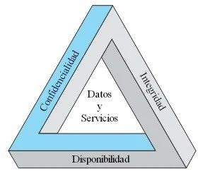
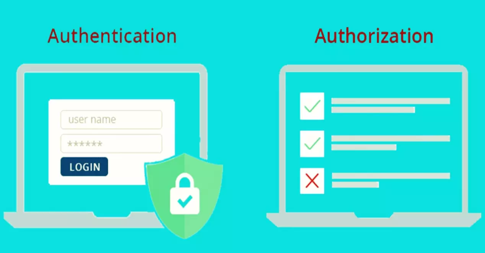
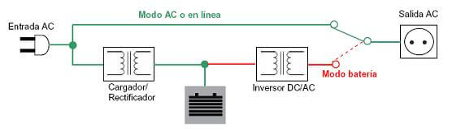
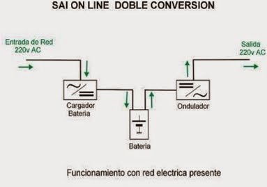
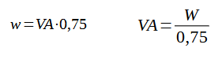

Objetivos de un sistema ¿seguro?
"El único sistema seguro es aquel que está apagado y desconectado, enterrado en un refugio de hormigón, rodeado por gas venenoso y custodiado por guardianes bien pagados y muy bien armados. Aún así, yo no apostaría mi vida por él" (Eugene Spafford).
Hablar de seguridad informática en términos absolutos es imposible y por ese motivo se habla más bien de Fiabilidad del sistema.
Objetivos de un sistema seguro fiable
- Detectar los posibles problemas y amenazas.
- Garantizar la adecuada utilización de los recursos y aplicaciones de los sistemas.
- Limitar las pérdidas y conseguir una adecuada recuperación en caso de incidente.
- Cumplir con el marco legal y los requisitos impuestos a nivel organizativo.
Y para poder llegar a estos objetivos, la SI se basa en los siguientes pilares o principios fundamentales:
Confidencialidad, Integridad y Disponibilidad
Los principios fundamentales de la seguridad de la información se basan en tres pilares cruciales: la confidencialidad, la integridad y la disponibilidad. Cada uno de estos principios juega un papel esencial para garantizar la protección de los datos y la integridad de los sistemas informáticos.
Tambien es conocido como CID (Confidencialidad, Integridad y Disponibilidad) o CIA (Confidentiality, Integrity and Availability)
Se trata de tres principios clave que deben implementarse en cualquier estrategia de seguridad para proteger la información contra accesos no autorizados, alteraciones y asegurar que los datos estén disponibles cuando se necesiten
- Privacidad o Confidencialidad: Este principio asegura que solo las personas autorizadas tengan acceso a la información. La privacidad protege los datos personales y sensibles, como los registros médicos o financieros, y los mantiene confidenciales. El objetivo es evitar accesos no autorizados que puedan poner en peligro la integridad de la información o comprometer la privacidad de los usuarios.
- Coherencia o Integridad: La integridad, garantiza que la información almacenada y transmitida sea precisa y completa, sin alteraciones no autorizadas. En otras palabras, asegura que los datos no sean modificados de forma maliciosa o accidental. Si se compromete la coherencia, los usuarios podrían recibir información incorrecta, lo que podría resultar en decisiones erróneas o acciones no deseadas.
- Disponibilidad: La disponibilidad se refiere a la capacidad de garantizar que la información y los sistemas estén accesibles para los usuarios autorizados cuando la necesiten. Este principio asegura que, incluso en situaciones extremas como ataques de denegación de servicio o fallos en el sistema, los datos sigan siendo accesibles para quienes tienen derecho a usarlos. La alta disponibilidad es fundamental para operaciones empresariales, servicios gubernamentales y sistemas críticos que requieren acceso constante.

CID de Ciberseguridad
Estos tres principios (CID) forman la base de cualquier estrategia de seguridad informática. Su correcta implementación ayuda a proteger la confidencialidad, fiabilidad y accesibilidad de la información, creando un entorno digital seguro y resiliente ante posibles amenazas.
Triada extendida CIDAN
A estos tres principios se les pueden unir dos mas relacionados con la transmisión de la informacion. Estos son la autenticidad y el no repudio, convirtiendo así la triada CID en la triada extendida CIDAN
Mecanismos para lograr estos objetivos
- Autenticación
- Autorización
- Política de contraseñas
- Verificador de integridat
- Cifrado
- Copias de seguridad
- SAI / UPS
- Control de acceso (físico)
- Software anti-malware
- Firewall
- IDS / IPS
- Certificados
- Auditoria
- Parches (de seguridad)
- Snapshots
Seguridad Informática vs Seguridad de la Información
Seguridad Informática
Se enfoca en la protección de los sistemas informáticos: hardware, software, redes y dispositivos.
- Control de acceso a equipos y redes.
- Uso de firewalls, antivirus, cifrado de dispositivos.
- Evita ataques como malware, phishing, intrusiones, etc.
Seguridad de la Información
Es un concepto más amplio. Busca proteger toda la información, sin importar su forma o medio (digital o físico).
- Incluye documentos físicos, conversaciones, bases de datos, etc.
- Aplica principios de confidencialidad, integridad y disponibilidad (CID).
- Se apoya en políticas, normas, formación del personal, controles físicos, etc.
Diferencias clave
- Seguridad informática: Subconjunto técnico centrado en lo digital.
- Seguridad de la información: Más amplia, abarca lo digital y lo físico.
En resumen:
La seguridad informática protege los sistemas que manejan la información.
La seguridad de la información protege la información en sí, esté donde esté.
Salidas profesionales
Seguridad Física y Lógica
La seguridad de la información no solo depende de las protecciones digitales. Existen dos tipos fundamentales de seguridad: la seguridad física y la seguridad lógica, las cuales trabajan juntas para proteger la información, los sistemas y los datos. A continuación, te explicamos cada tipo de seguridad en detalle:
Seguridad Física
La seguridad física se refiere a las medidas que se toman para proteger el hardware y las instalaciones físicas donde se almacenan y procesan los datos. Esto incluye la protección de servidores, computadoras, redes y otros dispositivos electrónicos de accesos no autorizados, daños o robos. La seguridad física se implementa en áreas clave como:
- Controles de acceso: Uso de sistemas de control de acceso, como tarjetas de identificación, lectores biométricos o claves de acceso, para restringir el acceso a áreas sensibles, como centros de datos y salas de servidores.
- Monitoreo y vigilancia: Cámaras de seguridad, sensores de movimiento y alarmas para detectar intrusos en las instalaciones. Estas medidas ayudan a disuadir el acceso no autorizado y a identificar posibles brechas de seguridad.
- Protección contra desastres: Sistemas de respaldo eléctrico (como generadores) y sistemas de protección contra incendios para asegurar que los equipos permanezcan operativos incluso en caso de emergencia.
- Seguridad de equipos: Uso de cerraduras físicas en dispositivos como computadoras portátiles, servidores y almacenamiento externo para evitar el robo de equipos o la manipulación no autorizada.
Seguridad Lógica
La seguridad lógica se refiere a las medidas técnicas y de software implementadas para proteger los sistemas de información y los datos contra accesos no autorizados, modificaciones, destrucción o robo. Se enfoca en asegurar la integridad, confidencialidad y disponibilidad de los datos a través de herramientas como:
- Contraseñas y autenticación: El uso de contraseñas fuertes y autenticación multifactor (MFA) para asegurar que solo los usuarios autorizados tengan acceso a los sistemas y datos. La autenticación multifactor agrega una capa extra de seguridad, requiriendo más de un método de validación (como una clave y un código enviado al móvil).
- Cifrado: El cifrado de datos es una técnica que convierte la información en un formato ilegible para cualquier persona que no tenga la clave para descifrarla. El cifrado asegura que, incluso si los datos son interceptados, no podrán ser leídos sin la clave adecuada.
- Firewall y antivirus: Los firewalls son dispositivos o software que controlan el tráfico de red y bloquean accesos no autorizados a una red. Los programas antivirus ayudan a detectar y prevenir software malicioso (malware) que pueda comprometer la seguridad del sistema.
- Monitoreo de sistemas: Herramientas de monitoreo y registro de actividades (logging) para detectar comportamientos inusuales o accesos no autorizados. Estos sistemas permiten identificar vulnerabilidades y prevenir ataques antes de que causen daños importantes.
- Políticas de acceso: Control de acceso basado en roles (RBAC), donde los usuarios solo pueden acceder a la información necesaria para realizar su trabajo. Esto minimiza el riesgo de accesos no autorizados o mal uso de los datos.
En resumen, la seguridad física se enfoca en proteger los activos tangibles como hardware y equipos, mientras que la seguridad lógica protege los activos intangibles, como datos y sistemas, mediante medidas digitales y de software. Ambas son fundamentales para crear un entorno seguro y resiliente frente a amenazas internas y externas.
Seguridad Activa y Pasiva
La seguridad activa es aquella que está destinada a evitar posibles daños informáticos. Su objetivo principal es prevenir cualquier tipo de ataque antes de que suceda, o sea, tiene carácter proactivo. Consiste en realizar una serie de procedimientos de forma habitual para evitar que se produzca cualquier tipo de ataque.
La seguridad pasiva es la que se destina a solucionar o minimizar los efectos provocados por un ataque informático una vez que este ya se ha producido. Es un tipo de seguridad reactiva. Puede ser provocado por un ataque intencionado o por un accidente e implica una serie de prácticas destinadas a retomar la normalidad.
La seguridad activa funciona como método de prevención, mientras que la seguridad pasiva se pone en marcha una vez que se ha producido alguna alteración informática
- ACTIVA
- Usar contraseñas seguras y cambiarlas cada cierto tiempo:
- Instalar softwares de protección, firewalls y antivirus:
- Actualizar de forma constante todos los programas:
- Encriptar los datos importantes:
- Concienciar a todos los usuarios:
- PASIVA
- Escanear y desinfectar de malwares todos los equipos informáticos que se hayan visto afectados por esta intromisión en la seguridad.
- Recuperar las copias de seguridad o backups más recientes con toda nuestra información guardada y en buen estado.
- Realizar particiones de discos duros para almacenar las copias y evitar que el malware se extienda a más equipos.
- Usar algún almacenamiento en la nube.
Vulnerabilidades
En el contexto de la seguridad informática, una vulnerabilidad es una debilidad o fallo en un sistema que puede ser explotado por un atacante para comprometer la confidencialidad, la integridad o la disponibilidad de los datos y servicios. Las vulnerabilidades pueden existir tanto en software como en hardware, y pueden ser resultado de errores de programación, configuraciones incorrectas, o incluso factores humanos. Existen diferentes tipos de vulnerabilidades que se deben identificar y mitigar para asegurar la protección de los sistemas.
Elementos a proteger
- Hardware
- Software
- Datos ← Lo más importante y difícil de recuperar
- Comunicaciones
- Factor Humano ← Lo más difícil de controlar
Niveles de profundidad
- Legales: LOPDGDD RGPD
- Comunicaciones: protocolos seguros
- Organizativos: niveles de acceso, contraseñas
- Físicas: ubicación de equipos, suministro eléctrico
Tipos de Vulnerabilidades
- Vulnerabilidades de software: Estas vulnerabilidades se encuentran en el código del software o las aplicaciones y son causadas por errores de programación, como desbordamientos de búfer, fallos en la validación de entradas o falta de verificación de accesos. Un atacante puede aprovechar estos errores para ejecutar código malicioso o acceder a datos sensibles.
- Vulnerabilidades de configuración: Ocurren cuando los sistemas o aplicaciones están mal configurados, lo que permite que usuarios no autorizados accedan a recursos sensibles. Esto puede incluir contraseñas predeterminadas, puertos abiertos innecesarios, o permisos de acceso incorrectos.
- Vulnerabilidades en el hardware: Algunos fallos de seguridad pueden provenir de debilidades físicas en los dispositivos, como la falta de protección de las interfaces de hardware o el acceso físico no restringido a servidores y otros equipos críticos.
- Vulnerabilidades en la red: Se refieren a debilidades en la infraestructura de la red que pueden permitir a los atacantes interceptar, modificar o redirigir el tráfico de datos. Las vulnerabilidades en la red incluyen configuraciones incorrectas en routers, firewalls mal configurados, o el uso de protocolos inseguros (como HTTP en lugar de HTTPS).
- Vulnerabilidades humanas: Son causadas por errores o malas prácticas de los usuarios, como el uso de contraseñas débiles, la falta de capacitación en seguridad, o el caer en ataques de ingeniería social (por ejemplo, phishing). Aunque estas vulnerabilidades no son técnicas, pueden ser igual de peligrosas para la seguridad de un sistema.
Causas Comunes de las Vulnerabilidades
- Fallas en el desarrollo de software: Muchos errores de seguridad son el resultado de malas prácticas de codificación, como la falta de validación adecuada de las entradas o la no implementación de controles de seguridad.
- Actualizaciones insuficientes: Las vulnerabilidades conocidas se pueden parchear mediante actualizaciones regulares de software. No mantener los sistemas actualizados puede dejar expuestos a los usuarios a riesgos innecesarios.
- Falta de pruebas de seguridad: No realizar pruebas de seguridad o auditorías regulares puede pasar por alto vulnerabilidades en el sistema, dejando el sistema vulnerable a ataques.
- Configuraciones predeterminadas inseguras: Muchos dispositivos y aplicaciones vienen con configuraciones predeterminadas que no son seguras. Los atacantes pueden aprovechar estas configuraciones si no se ajustan adecuadamente durante la instalación.
Mitigación de Vulnerabilidades
Para reducir el riesgo de explotación de vulnerabilidades, es esencial implementar una serie de prácticas de seguridad, tales como:
- Actualizaciones periódicas: Asegurarse de que todos los sistemas, aplicaciones y software estén actualizados con los últimos parches de seguridad.
- Escaneos de seguridad y auditorías: Realizar escaneos regulares para identificar vulnerabilidades y llevar a cabo auditorías de seguridad para verificar que las configuraciones y controles sean correctos.
- Capacitación en seguridad: Educar a los usuarios sobre buenas prácticas de seguridad, como la importancia de utilizar contraseñas fuertes, evitar hacer clic en enlaces sospechosos, y no compartir información sensible.
- Cifrado: Utilizar cifrado para proteger la confidencialidad de los datos sensibles tanto en tránsito como en reposo.
- Seguridad en capas: Implementar un enfoque de seguridad en capas, que implique usar múltiples herramientas y estrategias para proteger los sistemas de diferentes tipos de ataques.
Las vulnerabilidades son puntos débiles en los sistemas que pueden ser explotados por atacantes para comprometer la seguridad de la información. Identificar, mitigar y gestionar las vulnerabilidades de forma efectiva es crucial para mantener la integridad de los sistemas informáticos y proteger los datos sensibles contra accesos no autorizados y posibles daños.
Vulnerabilidad "Zero-Day"
Un zero-day (vulnerabilidad de día cero) es un término utilizado para describir una vulnerabilidad en un software o sistema que es desconocida para el proveedor o desarrollador en el momento en que es descubierta por un atacante. El nombre "zero-day" hace referencia a que los desarrolladores tienen "cero días" para solucionar el problema antes de que los atacantes puedan explotarlo.
Características de un Zero-Day
- Desconocimiento inicial: Al principio, tanto el desarrollador del software como los usuarios desconocen la existencia de la vulnerabilidad.
- Explotación por parte de atacantes: Los atacantes pueden aprovechar esta vulnerabilidad para obtener acceso no autorizado, ejecutar código malicioso o realizar otras acciones dañinas en el sistema o red.
- Sin parche o solución disponible: Al ser desconocida, no hay una actualización, parche o solución que haya sido liberada por el proveedor del software en el momento del ataque.
- Gravedad: Las vulnerabilidades de tipo "zero-day" suelen ser muy peligrosas, ya que los atacantes tienen una ventaja significativa hasta que se descubra la vulnerabilidad y se lance un parche para corregirla.
Ejemplo de un ataque Zero-Day
Imagina que un atacante descubre una vulnerabilidad en un sistema operativo ampliamente utilizado (como Windows o macOS). Este error podría permitir al atacante tomar control total de una máquina sin que el usuario lo sepa, por ejemplo, al abrir un archivo adjunto en un correo electrónico. Mientras la vulnerabilidad sea desconocida, el atacante puede explotarla libremente, ya que el proveedor del sistema operativo no ha lanzado un parche para corregirla.
¿Cómo se gestionan las vulnerabilidades Zero-Day?
- Investigación y parches: Una vez que se descubre una vulnerabilidad zero-day, los desarrolladores trabajan para crear y liberar un parche que solucione el problema. A menudo, las empresas de seguridad o los investigadores independientes también informan de estas vulnerabilidades para que se resuelvan lo más rápido posible.
- Exploits y mercados: Algunas vulnerabilidades zero-day pueden ser vendidas en mercados ilegales (como el mercado negro de exploits) para ser utilizadas por ciberdelincuentes. Sin embargo, los gobiernos y las agencias de inteligencia también compran estas vulnerabilidades para utilizarlas en operaciones de ciberseguridad o ciberespionaje.
Prevención de un Zero-Day
Para protegerse de un ataque zero-day, algunas estrategias incluyen:
- Mantener los sistemas y programas actualizados: Aunque los ataques zero-day pueden ser desconocidos al principio, es fundamental mantener el sistema y los programas actualizados para recibir parches y correcciones cuando estén disponibles.
- Utilizar programas de seguridad: Utilizar antivirus, firewalls y sistemas de detección de intrusos puede ayudar a mitigar los daños si la vulnerabilidad ya está siendo explotada.
- Autenticación multifactor: Implementar autenticación multifactor para minimizar el impacto de un posible ataque, incluso si el atacante ha explotado una vulnerabilidad zero-day.
Amenazas
En ciberseguridad, una amenaza es cualquier situación o caso que pueda tener consecuencias negativas para las operaciones, funciones, marca, reputación o imagen percibida de una empresa
Las amenazas de ciberseguridad pueden manifestarse de diversas formas, que incluyen virus, malware, ransomware, estafas de phishing y ataques de denegación de servicio (DoS), entre otras formas
Podemos tener varias clasificaciones atendiendo a:
Lugar del que provienen:
- Internas
- Insider
- Desconocimiento/Falta de formación
- Externas
- Campañas de hackeo
- Ataque dirigido
A que pueden afectar:
- Físicas
- Robos, sabotajes, destrucción de sistemas
- Cortes de suministro eléctrico
- Condiciones atmosfericas : humedad, altas o bajas temperaturas
- Interferencias electromagnéticas
- Lógicas
- Rogueware o falsos programas de seguridad
- Puertas traseras o backdoors
- Virus
- Gusanos o worm
- Troyanos
- Keylogger
- Rootkit
Ataques
Un ataque informático hace referencia a la realización de una tentativa de poner en riesgo la seguridad informática de un equipo o conjunto de equipos, con el fin de causar daños deliberados que afecten a su funcionamiento
Técnicas de ataque

Vectores de ataque
Los vectores de ataque son la ruta elegida para explotar las debilidades o vulnerabilidades que pueden estar presentes en ordenadores, aplicaciones, servidores de correo electrónico, software, páginas web, navegadores, redes, etc., y llevar a cabo ataques informáticos
Clasificación de Vulnerabilidades
Cuando se descubre una vulnerabilidad, se detalla en un "paper"
En ciencia (y también en ciberseguridad), un “paper” es un artículo científico publicado en una revista académica o presentado en una conferencia
Los "papers" suelen pasar por "peer review" (revisión por otros expertos), que es un proceso de validación antes de publicarse
Cuando, mediante un 'paper', se informa de una vulnerabilidad, esta se valora y clasifica.
Existen bases de datos de vulnerabilidades y calculadoras de riesgo para cada vulnerabilidad
NVE - FIRST
Calculadora de peligrosidad de una vulnerabilidad
https://www.first.org/cvss/BBDD vulnerabilidades
https://nvd.nist.gov/CSIRT
La evolución del malware y otras amenazas, así como la aparición de normativa dirigida a proteger la información, han hecho que los equipos de respuesta ante incidentes de seguridad, CSIRT por sus siglas en inglés Computer Security Incident Response Team, sean de vital importancia para las compañías

INCIBE
https://www.incibe-cert.es/Cert CV
http://www.csirtcv.gva.es/
CCN-CERT
https://www.ccn-cert.cni.es/ENISA otros paises europeos
https://www.enisa.europa.euAuditorias
Una auditoría es una revisión práctica que se realiza sobre los recursos informáticos que dispone una entidad con el fin de emitir un informe o dictamen sobre la situación en que se desarrollan y se utilizan.
Un proceso de auditoría recorre ciertas prácticas enfocadas a las diferentes pruebas que se tendrán que realizar para satisfacer la demanda de cliente, utilizando "Hacking Ético" en algunas de las fases de este proceso.
En hacking ético se divide de 3 grandes tipos de auditoría. Se identifican por colores, y cada una tiene unas propiedades.
- Caja blanca: el auditor tiene todo el conocimiento y privilegio (ej. auditoría de código).
- Caja gris: el auditor actúa como un empleado sin privilegios, desde dentro.
- Caja negra: el auditor actúa como un atacante externo, sin conocimiento previo.
Ingeniería Social
La ingeniería social es una técnica utilizada por los atacantes para manipular a las personas con el fin de obtener acceso a información confidencial, sistemas o recursos sin necesidad de vulnerar sistemas de seguridad tradicionales. En lugar de aprovechar fallos en software o hardware, los atacantes se enfocan en explotar la psicología humana, como la confianza, el miedo o la urgencia, para inducir a las víctimas a realizar acciones que comprometan su seguridad.
Tipos de Ingeniería Social
Existen varias formas en las que los atacantes emplean la ingeniería social para alcanzar sus objetivos. Los métodos más comunes incluyen:
- Phishing: El phishing es un tipo de ataque en el que los atacantes se hacen pasar por una entidad confiable, como una institución financiera, una empresa o una red social, con el fin de engañar a la víctima y que esta revele información sensible, como contraseñas o detalles de cuentas bancarias. Usualmente, el atacante envía un correo electrónico o mensaje que parece legítimo, pero contiene enlaces a sitios web fraudulentos diseñados para capturar la información del usuario.
- Vishing (phishing telefónico): Similar al phishing, pero en lugar de correos electrónicos, los atacantes utilizan llamadas telefónicas. El atacante puede hacerse pasar por un representante de una empresa, una autoridad o una persona de confianza para obtener información personal o financiera del objetivo.
- Pretexting: En el pretexting, el atacante crea una historia o un "pretexto" falso con el fin de obtener información personal de la víctima. Por ejemplo, el atacante podría hacerse pasar por un investigador que necesita información para una encuesta o una persona de soporte técnico que necesita acceder a una cuenta de usuario para solucionar un problema.
- Baiting: En un ataque de "baiting", el atacante ofrece algo de valor, como un archivo gratuito, un programa o una oferta exclusiva, para atraer a la víctima. Cuando la víctima acepta la oferta, se le pide que descargue un archivo malicioso o que proporcione información personal, como datos bancarios.
- Quizzes y encuestas: Los atacantes pueden crear encuestas o cuestionarios en línea aparentemente inofensivos para recopilar información personal de la víctima. Aunque la encuesta pueda parecer divertida o inofensiva, los atacantes pueden estar buscando datos valiosos como nombres de familiares, fechas de nacimiento o direcciones, que luego pueden utilizar para realizar ataques más específicos.
¿Cómo Funciona la Ingeniería Social?
Los ataques de ingeniería social suelen seguir una serie de pasos que aprovechan la naturaleza humana. Un atacante puede:
- Recopilar información: El primer paso en un ataque de ingeniería social es reunir información sobre la víctima, como sus intereses, su trabajo, sus amigos o familiares. Esta información se puede obtener de fuentes públicas, redes sociales o mediante interacciones directas con la víctima.
- Crear confianza: El atacante se hace pasar por una persona o entidad confiable para generar confianza en la víctima. Esto puede implicar el uso de un tono amistoso o profesional, la imitación de una autoridad legítima o el establecimiento de una conexión emocional con la víctima.
- Explotar la vulnerabilidad humana: Una vez que el atacante ha establecido la confianza, explota la psicología humana, como el miedo (por ejemplo, al afirmar que hay un problema urgente con la cuenta bancaria de la víctima), la codicia (ofreciendo una recompensa o premio) o la curiosidad (por ejemplo, ofreciendo un enlace interesante que lleva a un sitio web malicioso).
- Obtener información confidencial: El atacante solicita información confidencial, como contraseñas, números de tarjetas de crédito, o detalles de acceso a cuentas bancarias o redes corporativas. Dado que la víctima confía en la fuente, es más probable que divulgue esta información.
Prevención de la Ingeniería Social
Para protegerse contra los ataques de ingeniería social, es crucial tomar precauciones y estar al tanto de las tácticas utilizadas por los atacantes. Algunas medidas clave incluyen:
- Verificar las fuentes: Siempre verifica la identidad de quien te contacta, ya sea por teléfono, correo electrónico o redes sociales. Si recibes un mensaje inesperado de una persona o entidad desconocida, contacta directamente a la empresa o institución a través de canales oficiales.
- Desconfiar de solicitudes urgentes: Los atacantes a menudo crean un sentido de urgencia (como un problema en tu cuenta bancaria o la necesidad de realizar una acción inmediata) para que actúes sin pensar. Si algo parece demasiado urgente o sospechoso, tómate un momento para analizar la situación antes de responder.
- No hacer clic en enlaces desconocidos: No hagas clic en enlaces de correos electrónicos o mensajes de texto que no esperabas o que provienen de fuentes dudosas. Los enlaces pueden llevar a sitios web fraudulentos que intentan robar tu información.
- Educar a los empleados y usuarios: En un entorno organizacional, es importante entrenar a los empleados sobre los riesgos de la ingeniería social y cómo reconocer los intentos de ataque. Un empleado bien informado es menos probable que caiga en las trampas de un atacante.
- Usar autenticación multifactor: La autenticación multifactor (MFA) agrega una capa adicional de seguridad, lo que hace que, incluso si un atacante obtiene tus credenciales, no pueda acceder a tu cuenta sin otro factor de verificación, como un código enviado a tu teléfono.
La ingeniería social se basa en manipular la psicología humana para obtener acceso a información confidencial o sistemas. A pesar de que las técnicas de ingeniería social no requieren conocimientos técnicos avanzados, pueden ser muy efectivas si no se toman precauciones adecuadas. Estar informado sobre las tácticas utilizadas por los atacantes y aplicar medidas de seguridad preventivas puede ayudar a protegerte contra este tipo de amenazas.
Política de Contraseñas
Una política de contraseñas es un conjunto de reglas y directrices que definen cómo deben ser gestionadas las contraseñas dentro de una organización o sistema. Su objetivo es garantizar que las contraseñas sean seguras, lo que ayuda a proteger la información sensible y a reducir el riesgo de acceso no autorizado.
Objetivos de una Política de Contraseñas
- Fortalecer la seguridad: Las contraseñas deben ser suficientemente fuertes para dificultar su adivinación o vulnerabilidad a ataques como el brute-force.
- Controlar el acceso: Asegurar que solo los usuarios autorizados tengan acceso a los sistemas, protegiendo así la información confidencial.
- Prevenir el uso de contraseñas débiles: Impedir que se utilicen contraseñas fáciles de adivinar o comunes (como "123456", "password", etc.).
- Cumplir con normativas: Cumplir con las regulaciones de seguridad que exigen políticas de contraseñas adecuadas, como las normativas de protección de datos.
Recomendaciones para una Política de Contraseñas Segura
- Longitud mínima: Las contraseñas deben tener una longitud mínima de 8 a 12 caracteres. Cuanto más larga sea la contraseña, más difícil será de descifrar.
- Complejidad: Las contraseñas deben incluir una combinación de letras mayúsculas, minúsculas, números y caracteres especiales (como @, #, $, etc.).
- Evitar palabras comunes: No utilizar palabras del diccionario ni información personal fácilmente accesible (como el nombre o fecha de nacimiento).
- Cambio regular: Las contraseñas deben cambiarse regularmente, al menos cada 3 a 6 meses, para reducir el riesgo de acceso no autorizado.
- Autenticación multifactor (MFA): Siempre que sea posible, se debe implementar la autenticación multifactor para añadir una capa extra de seguridad.
- Almacenamiento seguro: Las contraseñas nunca deben almacenarse en texto claro. Es importante utilizar algoritmos de hashing seguros (como bcrypt) para almacenarlas de manera segura.
Buenas Prácticas para Usuarios
- Uso de gestores de contraseñas: Los usuarios pueden utilizar herramientas o aplicaciones de gestión de contraseñas para crear y almacenar contraseñas fuertes sin tener que recordarlas todas.
- No compartir contraseñas: Las contraseñas deben ser personales y no deben compartirse con otras personas. Si es necesario compartir el acceso, se deben utilizar herramientas de acceso compartido con control de permisos.
- Cuidado con el phishing: Los usuarios deben estar alerta a correos electrónicos y mensajes sospechosos que intenten engañarlos para obtener sus contraseñas.
Una política de contraseñas adecuada es crucial para proteger los sistemas y datos de una organización. Implementar reglas claras y fomentar buenas prácticas en los usuarios puede reducir significativamente el riesgo de accesos no autorizados y ciberataques. Mantener las contraseñas seguras es una parte fundamental de la ciberseguridad.
Con las políticas de contraseñas, conseguimos reforzar la autenticación y la autorización de acceso a los recursos

¿Qué son los Sistemas Biométricos?
Los sistemas biométricos son tecnologías que utilizan características físicas o comportamentales únicas de un individuo para verificar su identidad. Estas características biométricas pueden incluir huellas dactilares, iris, rostro, voz o incluso patrones de comportamiento.
Tipos de Sistemas Biométricos
Los sistemas biométricos se clasifican en diferentes tipos según las características que analizan:
- 👆 Reconocimiento de huellas dactilares: Utiliza el patrón único de las huellas dactilares para autenticar a la persona.
- 👁️ Reconocimiento del iris: Analiza el patrón único en el iris del ojo para la identificación.
- 👤 Reconocimiento facial: Detecta las características únicas del rostro de una persona para verificar su identidad.
- 🎤 Reconocimiento de voz: Utiliza las características vocales y patrones de voz específicos de cada individuo.
- Reconocimiento de la firma dinámica: Analiza el comportamiento de una persona al escribir o firmar un documento.
Funcionamiento de los Sistemas Biométricos ⚙️
Los sistemas biométricos funcionan mediante el proceso de captura, almacenamiento y comparación de los datos biométricos de un individuo:
- Captura: El sistema captura los datos biométricos de la persona (por ejemplo, huella dactilar o rostro).
- Almacenamiento: Los datos biométricos se almacenan de manera segura, generalmente en un formato encriptado.
- Comparación: Cuando el individuo intenta acceder al sistema, sus datos biométricos se comparan con los almacenados previamente para verificar su identidad.
Ventajas de los Sistemas Biométricos
- Seguridad mejorada: La autenticación biométrica es más difícil de falsificar que las contraseñas tradicionales o los PIN.
- Comodidad: No es necesario recordar contraseñas complejas, lo que mejora la experiencia del usuario.
- Autenticación rápida: Los sistemas biométricos permiten un proceso de autenticación rápido y preciso.
Desventajas de los Sistemas Biométricos
- Coste: La implementación de sistemas biométricos puede ser costosa, tanto en términos de hardware como de software.
- Privacidad: Algunos usuarios pueden sentirse incómodos con la recolección y almacenamiento de datos biométricos personales.
- Posibilidad de errores: Aunque son muy precisos, los sistemas biométricos no son infalibles y pueden dar lugar a falsos positivos o negativos.
Los sistemas biometricos son un sistema para complementar los sistemas de autenticación MFA
- Algo que se
- Algo que tengo
- Algo que soy (sistemas biometricos)
Criptografía para Almacenaje de Información
¿Qué es la Criptografía? 🔐
La criptografía es el arte y la ciencia de proteger la información mediante técnicas matemáticas que convierten los datos legibles en un formato ilegible para aquellos que no tienen la clave adecuada. Su objetivo es asegurar la confidencialidad, integridad, autenticidad y no repudio de los datos.
Cifrado en Reposo y en tránsito
El cifrado de datos, tanto en reposo como en tránsito, es una de las necesidades más apremiantes de las empresas modernas. Los datos se han convertido en la actualidad en el tesoro más importante. Hoy, para cualquier negocio, los datos son el activo de mayor valor. Pero, a su vez, son el activo más frágil y más susceptible a miles de amenazas que pueden poner en riesgo su integridad. El cifrado correcto garantiza una protección máxima y una gestión optimizada de la información.
¿Por qué es importante para el Almacenaje (Cifrado en reposo)? 🗃️
La criptografía para el almacenaje de información es esencial para proteger datos sensibles, como contraseñas, información financiera, documentos confidenciales y más. Al cifrar los datos, incluso si son robados o accedidos de forma no autorizada, estos no podrán ser comprendidos sin la clave adecuada.
Tipos de Criptografía para Almacenaje
Existen diversos métodos criptográficos para proteger los datos almacenados:
- Cifrado Simétrico: En este tipo de cifrado, la misma clave se utiliza tanto para cifrar como para descifrar los datos. Ejemplo de algoritmos simétricos son AES (Advanced Encryption Standard) y DES (Data Encryption Standard).
- Cifrado Asimétrico: Utiliza un par de claves, una pública para cifrar los datos y una privada para descifrarlos. Un ejemplo común es RSA (Rivest–Shamir–Adleman).
- Hashing: En lugar de cifrar y descifrar datos, el hashing convierte la información en un valor único (hash) que no se puede revertir, asegurando la integridad. Ejemplos son MD5, SHA-1 y SHA-256.
Ventajas de la Criptografía para Almacenaje
- Confidencialidad: Solo los usuarios con la clave correcta pueden acceder a los datos almacenados.
- Integridad: Los datos no pueden ser alterados sin ser detectados.
- Autenticidad: La criptografía asegura que los datos provienen de una fuente confiable.
- No repudio: Evita que alguien niegue haber enviado o alterado los datos.
Aplicaciones Comunes de Criptografía en el Almacenaje de Datos 💾
- Contraseñas: Las contraseñas de usuarios se almacenan en bases de datos de forma cifrada o con un hash seguro.
- Información financiera: Los datos bancarios y de tarjetas de crédito se cifran para evitar el robo de información.
- Archivos confidenciales: Documentos sensibles como contratos, informes y registros personales se cifran para evitar accesos no autorizados.
Desafíos de la Criptografía para Almacenaje
- Gestión de claves: La seguridad del sistema depende de la protección adecuada de las claves criptográficas.
- Rendimiento: Los algoritmos de cifrado pueden consumir recursos, lo que puede afectar el rendimiento en sistemas con grandes volúmenes de datos.
- Futuro de los ataques: El avance de la computación, como la computación cuántica, plantea desafíos para la criptografía actual.
Plan Integral de Protección
¿Qué es un Plan Integral de Protección?
Un Plan Integral de Protección es un conjunto de medidas, procedimientos y tecnologías que tienen como objetivo proteger los activos de una organización, en especial los datos e información sensible, frente a amenazas internas y externas. Este plan debe incluir estrategias para mitigar riesgos y responder de manera efectiva ante incidentes de seguridad.
Componentes Clave de un Plan Integral de Protección
Un Plan Integral de Protección debe abarcar varios componentes fundamentales para asegurar una protección completa de la información:
- Políticas de Seguridad: Definir normas y procedimientos que guíen a la organización en el manejo de la seguridad de la información, como el acceso a datos y el uso de contraseñas.
- Controles Técnicos: Implementar herramientas tecnológicas para proteger la infraestructura, como firewalls, antivirus, sistemas de detección de intrusiones (IDS) y cifrado de datos.
- Formación y Concientización: Capacitar a los empleados en buenas prácticas de seguridad para prevenir ataques como el phishing o la ingeniería social.
- Gestión de Incidentes: Establecer procedimientos claros para la detección, respuesta y recuperación ante incidentes de seguridad.
- Evaluación y Auditoría: Realizar auditorías periódicas para evaluar la efectividad de las medidas de seguridad y actualizar el plan en función de las nuevas amenazas.
Fases del Plan Integral de Protección ⚙️
El Plan Integral de Protección se desarrolla a través de varias fases que aseguran una respuesta coordinada ante cualquier riesgo:
- Identificación de Amenazas: Analizar y determinar las posibles amenazas que puedan afectar la infraestructura y los datos de la organización.
- Evaluación de Riesgos: Evaluar el impacto potencial de las amenazas identificadas y su probabilidad de ocurrir para priorizar las medidas de seguridad.
- Implementación de Medidas de Protección: Desarrollar e implementar las medidas tecnológicas y organizacionales necesarias para reducir los riesgos.
- Monitoreo y Respuesta: Supervisar constantemente los sistemas para detectar incidentes en tiempo real y activar el plan de respuesta ante incidentes.
- Recuperación y Mejora Continua: Tras un incidente, restaurar los sistemas y la información, y analizar el evento para mejorar el plan y prevenir futuros incidentes.
Beneficios de un Plan Integral de Protección
- Mejora de la Seguridad: Protege de manera efectiva los activos de la organización y mitiga posibles brechas de seguridad.
- Cumplimiento Regulatorio: Asegura que la organización cumpla con las normativas y estándares de seguridad, como GDPR o ISO 27001.
- Reducción de Riesgos: Minimiza las probabilidades de sufrir incidentes de seguridad graves, como brechas de datos o pérdidas financieras.
- Resiliencia Organizacional: Permite que la organización se recupere rápidamente de cualquier incidente, reduciendo el impacto en las operaciones.
Desafíos en la Implementación de un Plan Integral de Protección
- Costos: La implementación de medidas de seguridad y tecnologías adecuadas puede ser costosa, especialmente para pequeñas y medianas empresas.
- Gestión de la Información Sensible: Asegurar que toda la información sensible esté adecuadamente protegida puede ser complejo, sobre todo cuando se trata de grandes volúmenes de datos.
- Resistencia al Cambio: Los empleados y partes interesadas pueden resistirse a implementar nuevos procedimientos de seguridad, lo que dificulta la adopción del plan.
- Adaptabilidad: Las amenazas cibernéticas evolucionan constantemente, lo que exige que el plan sea flexible y se adapte rápidamente a los cambios.
Análisis Forense Informático
¿Qué es el Análisis Forense Informático?
El análisis forense informático es el proceso de recolectar, analizar y preservar evidencia digital con el fin de investigar incidentes relacionados con la seguridad informática, fraudes, delitos cibernéticos o violaciones de políticas internas. Este tipo de análisis se lleva a cabo de manera rigurosa para asegurar que la evidencia pueda ser utilizada en un proceso judicial.
Objetivos del Análisis Forense Informático 🎯
- Recopilación de Evidencia: Obtener y preservar pruebas digitales de manera que no se alteren, manteniendo su integridad para su posible uso legal.
- Identificación de Causas: Determinar las causas de un incidente de seguridad, como un ataque cibernético o una fuga de datos.
- Identificación de los Responsables: Encontrar información que permita identificar a los atacantes o personas responsables de un incidente de seguridad.
- Soporte en Procesos Legales: Presentar las evidencias obtenidas en un análisis forense para respaldar un caso legal o investigaciones criminales.
Fases del Análisis Forense Informático
- Recolección de Datos: La primera fase consiste en la adquisición de datos relevantes del sistema afectado sin alterar la evidencia original. Esto incluye discos duros, registros, y otros dispositivos de almacenamiento.
- Preservación de la Evidencia: Se deben aplicar técnicas para preservar los datos adquiridos, garantizando que no se modifiquen durante el proceso de análisis.
- Examen de la Evidencia: Los investigadores examinan la evidencia recolectada buscando pruebas que puedan relacionarse con el incidente. Esto puede incluir análisis de archivos, registros de acceso, y patrones de tráfico de red.
- Documentación: Todos los pasos realizados durante el análisis deben ser documentados de manera meticulosa para garantizar que los resultados sean legales y válidos en un tribunal.
- Informe de Resultados: Los hallazgos deben ser presentados en un informe claro y detallado que explique el análisis realizado, las pruebas encontradas y las conclusiones alcanzadas. Este informe puede ser utilizado en el proceso judicial o en decisiones organizacionales.
Herramientas Utilizadas en el Análisis Forense 🧰
Existen diversas herramientas que los profesionales de la informática forense utilizan para llevar a cabo el análisis de manera eficiente y profesional:
- EnCase: Una de las herramientas más populares en la informática forense, utilizada para la adquisición, análisis y reporte de evidencia digital.
- FTK (Forensic Toolkit): Una suite de herramientas forenses que ayuda en la recuperación, análisis y presentación de evidencia.
- Autopsy: Una plataforma de análisis forense digital, de código abierto, que se usa para analizar discos duros, sistemas de archivos y otros dispositivos.
- Wireshark: Una herramienta para el análisis de tráfico de red que ayuda a los forenses a identificar comunicaciones sospechosas o maliciosas.
Importancia del Análisis Forense en la Seguridad Informática
El análisis forense informático es esencial para responder eficazmente a incidentes de seguridad y cumplir con las regulaciones legales. Ayuda a las organizaciones a:
- Detección Temprana de Amenazas: Permite identificar y analizar ataques de forma temprana, minimizando su impacto.
- Cumplimiento Legal: Facilita la recolección de pruebas de forma legal para ser presentadas en los tribunales en casos de fraude o delitos cibernéticos.
- Recuperación de Datos: Ayuda a recuperar datos valiosos que pueden haberse perdido o destruido durante un ataque o incidente.
- Mejora de la Seguridad: A través de los resultados del análisis forense, las organizaciones pueden mejorar sus políticas de seguridad para prevenir incidentes futuros.
Desafíos del Análisis Forense Informático
- Protección de la Privacidad: Durante la recolección de datos, se deben seguir procedimientos éticos y legales para proteger la privacidad de las personas involucradas.
- Alta Complejidad: El análisis forense puede ser extremadamente técnico y complejo, lo que requiere habilidades especializadas y conocimientos avanzados.
- Limitaciones de Tiempo: Los análisis forenses deben realizarse de manera eficiente, ya que los incidentes de seguridad pueden seguir ocurriendo mientras se lleva a cabo el proceso.
- Herramientas Costosas: Las herramientas forenses especializadas pueden ser costosas, lo que podría representar un desafío para algunas organizaciones.
🏢 Ubicación y Protección Física de los Equipos y Servidores
La protección física de los equipos informáticos es fundamental para garantizar la seguridad de los datos y la continuidad operativa de una organización. Esta protección comienza desde el lugar donde se encuentran instalados los equipos.
Ubicación Adecuada
- Posibilidad de crecimiento del CPD Escalabilidad.
- Entradas amplias y accesibles: Para facilitar la instalación de nuevos equipos.
- Región sismicamente estable
- Zona alejada de inundaciones estándar TIA 942
- 🧯 Protección contra incendios: Es importante contar con sistemas de detección y extinción de incendios adecuados.
- 💧 Control ambiental: Deben evitarse ubicaciones expuestas a humedad o temperaturas extremas. Se recomienda el uso de aire acondicionado y sistemas de monitoreo ambiental.
- Lejos de zonas de paso: Para evitar daños accidentales, no deben estar cerca de pasillos concurridos ni accesos generales.
- Acceso restringido: Las salas de servidores deben estar en zonas seguras del edificio, con acceso controlado solo para personal autorizado.
Protección Física (Acceso restringido)
- Armarios o racks con llave: Los servidores deben estar instalados en racks metálicos cerrados con llave para impedir manipulaciones no autorizadas.
- 🎥 Videovigilancia: Cámaras de seguridad que monitoreen continuamente las salas técnicas.
- Registros de acceso: Mantener un control de quién entra y cuándo en la sala de servidores, ya sea con registros manuales o sistemas biométricos.
- 🧰 Mantenimiento preventivo: Programar revisiones regulares del estado de los equipos y del sistema eléctrico para evitar fallos por deterioro físico.
Consideraciones Adicionales
- 🔌 Sistemas de alimentación ininterrumpida (SAI), y grupos electrógenos: Protegen los equipos ante cortes de energía y permiten un apagado controlado.
- Redundancia: De sumimistro eléctrco y de acceso a internet (con proveedores distintos).
- Redundancia: Tener servidores y equipos de respaldo en otras ubicaciones ayuda a continuar operando en caso de incidentes.
- 🚪 Puertas reforzadas: Las entradas a salas críticas deben ser robustas, con cerraduras electrónicas o tarjetas de acceso.
- Control factores ambientales: Temperatura, humedad, polvo, presión.
- Monitoreo continuo: Equipo humano de soporte 24/7.
La seguridad física es el primer paso para garantizar una infraestructura tecnológica segura y confiable. Un entorno físico controlado protege no solo el hardware, sino también toda la información que estos dispositivos contienen.
Segun ANSI, TIA-942 Standard OnePager-110220.pdf, se puede clasificar un CPD en 4 tipos
- Rated-1: Basic Site Infrastructure
- Rated-2: Redundant Component Site Infrastructure
- Rated-3: Concurrently Maintainable Site Infrastructure
- Rated-4: Fault Tolerant Site Infrastructure
🔋 Fuentes de Alimentación Redundantes
Las fuentes de alimentación redundantes son una medida clave para garantizar la continuidad del servicio en sistemas críticos. Su objetivo es proporcionar energía de respaldo en caso de fallo de una fuente principal.
¿Cómo funcionan?
- Duplicación de fuentes: El equipo dispone de dos (o más) fuentes de alimentación independientes.
- Conmutación automática: Si una fuente falla, la otra toma el control automáticamente sin interrumpir el funcionamiento.
- Hot swap: Algunas fuentes redundantes pueden reemplazarse en caliente, sin apagar el sistema.
Aplicaciones comunes
- Servidores: Muy usados en servidores de alta disponibilidad.
- Equipos de red: Routers y switches empresariales pueden tener fuentes dobles.
- Centros de datos: Infraestructuras críticas donde el tiempo de inactividad debe ser cero.
Ventajas
- Mayor fiabilidad: Minimiza el riesgo de fallos por corte eléctrico.
- Tiempo de actividad continuo: Permite mantener sistemas funcionando incluso durante tareas de mantenimiento.
- Facilidad de mantenimiento: Posibilidad de sustituir componentes sin apagar el sistema.
Utilizar fuentes de alimentación redundantes es una práctica fundamental en entornos que requieren alta disponibilidad y tolerancia a fallos.
🔌 Sistemas de Alimentación Ininterrumpida (SAI)
Un SAI (UPS en inglés) es un dispositivo que proporciona energía eléctrica de respaldo en caso de cortes o caídas de tensión. Es esencial para mantener el funcionamiento de sistemas críticos durante apagones breves o hasta que entren en acción otras fuentes de energía.
- Posibles problemas con el suministro eléctrico
- Corte
- Bajada de tensión momentánea
- Picos de tensión
- Bajada de tensión sostenida
- Subida de tensión sostenida
- Ruido eléctrico
- Variación de frecuencia
Funciones principales
- Suministro de energía: Mantiene el equipo funcionando por unos minutos tras un corte eléctrico.
- Estabilización de voltaje: Protege frente a subidas o bajadas de tensión.
- Prevención de pérdida de datos: Permite guardar el trabajo y apagar el sistema correctamente.
Tipos de SAI
- Offline o standby: Solo entra en funcionamiento cuando detecta un fallo en el suministro eléctrico.


- Interactivo: Regula pequeñas variaciones de voltaje sin usar la batería.
- Online: Ofrece la mayor protección, transformando constantemente la corriente para asegurar energía limpia y estable.
Usos comunes
- Servidores y ordenadores: Evitan apagados inesperados que puedan corromper datos.
- Equipos de red: Mantienen conectividad durante apagones.
- Sistemas de seguridad: Cámaras, alarmas y controles de acceso deben mantenerse activos siempre.
El uso de un SAI proporciona una capa extra de seguridad eléctrica en infraestructuras tecnológicas, ayudando a garantizar disponibilidad y continuidad del servicio.
Cálculo potencia
Los fabricantes suelen utilizar el concepto de potencia aparente, que se mide en VA (voltampere), Volts x Amperes

KVA (lee kábeas) 1 KVA = 1000 VA
Potencia eficaz, Watt = W
Grupos Electrógenos
Ante un corte prolongado de energía, el SAI puede resultar insuficiente, siendo un grupo electrógeno el elemento autónomo que nos suministre energía hasta que se restablezca el suministro normal.
Un grupo electrógeno es un equipo capaz de generar energía eléctrica de forma autónoma mediante un motor de combustión. Se utiliza como fuente de respaldo en caso de fallo del suministro eléctrico principal.
Componentes principales
- Motor: Generalmente funciona con diésel o gasolina.
- Alternador: Transforma la energía mecánica del motor en electricidad.
- Sistema de control: Gestiona el encendido, apagado y monitoreo del grupo.
- Arranque manual (Hasta 5 KVA)
- Arranque automático
Funcionamiento
- Cuando se detecta una interrupción del suministro eléctrico, el grupo electrógeno se activa automáticamente (si dispone de sistema ATS).
- Genera electricidad para abastecer el sistema mientras dura el corte.
- Una vez vuelve la red eléctrica, el generador se apaga y el sistema retorna al modo normal.
Aplicaciones comunes
- Hospitales: Garantizan el funcionamiento continuo de equipos médicos.
- Centros de datos: Mantienen operativos los servidores durante apagones prolongados.
- Industria: Aseguran la producción ante cortes energéticos.
Los grupos electrógenos son una solución robusta y confiable para mantener la disponibilidad eléctrica en situaciones críticas o de emergencia.
💾 Copias de Seguridad e Imágenes de Respaldo
Las copias de seguridad (o backups) y las imágenes de respaldo son prácticas fundamentales para proteger la información ante pérdidas, fallos de sistema, ataques o errores humanos.
Tipos de copias de seguridad
- Completa: Se copia todo el contenido de los archivos y sistemas.
- Incremental: Solo se copian los archivos modificados desde la última copia.
- Diferencial: Copia los cambios realizados desde la última copia completa.
Imágenes de respaldo
Una imagen de respaldo es una copia exacta (bit a bit) de todo el sistema, incluyendo el sistema operativo, configuraciones, programas y archivos. Permite restaurar un equipo al estado exacto en que se encontraba.
Destinos habituales para copias
- Discos duros externos o NAS
- ☁️ Servicios de almacenamiento en la nube
- 📀 Soportes físicos como DVDs o cintas magnéticas (uso en entornos especiales)
Buenas prácticas
- Realizar copias periódicas y automatizadas.
- Verificar la integridad de las copias regularmente.
- Proteger las copias con cifrado y acceso restringido.
- 🌍 Mantener al menos una copia fuera del sitio (offsite).
- 🧪 Probar la restauración de vez en cuando para asegurarse de que funciona.
Contar con una buena política de copias de seguridad es clave para garantizar la recuperación ante desastres y mantener la continuidad del negocio.
Aplica la política 3-2-1
📊 Política 3-2-1 de Copias de Seguridad
La estrategia 3-2-1 es una de las mejores prácticas más recomendadas para realizar copias de seguridad efectivas y confiables.
¿En qué consiste?
- 3 copias de los datos: Incluye el archivo original y al menos dos copias de seguridad.
- 2 tipos de soporte diferentes: Por ejemplo, un disco duro externo y almacenamiento en la nube.
- 🌍 1 copia almacenada fuera del sitio: Para protegerse de incendios, robos o desastres locales.
Objetivo
Minimizar el riesgo de pérdida de información. Si una copia falla o es inaccesible, aún se dispone de otras para restaurar los datos.
Ejemplo práctico
- 💻 Copia local en el disco duro del ordenador.
- 📀 Copia externa en un disco duro portátil.
- ☁️ Copia en la nube con servicios como Google Drive, Dropbox o Amazon S3.
Con esta política, se garantiza la resiliencia y recuperación de los datos ante fallos técnicos, errores humanos o ciberataques.
El plan de Backup
Incluye simulacros programados de recuperacion de datos
- De que información hacer copia ??
- Cuando ?? Completa/Diferencial/incremental
- Donde ??
- Es necesario encriptar ??
- Cuando revisar/comprobar copias ??
- Cuanto tiempo conservar las copias ??
- Como identificar las copias ??
- Como informar del éxito o fracaso de las tareas de copia ??
- Como gestionar el borrado seguro ??
- Como proteger las copias o almacenes frente a ransomware ??
El plan de backup es la definición y descripción de todos los puntos anteriormente expuestos y su oficialización por parte de los responsables del área de seguridad.
Es un documento oficial dentro de la organización
Además, hay que tener en cuenta deltro del plan, las siguientes consideraciones
- Automatizar procesos de CS al máximo
- Designar a responsable de supervisión
- Designar a operador de copia (cambios de soportes, etc...)
- Asignar permisos de copia a la información definida
- Revisar copia de información “bloqueada” (BBDD, etc.. )
- Documentar los procesos de copia y restauración
Criptografía: Clave Simétrica y Pública
La criptografía es una técnica utilizada para proteger la información mediante el uso de códigos o claves que hacen que los datos solo puedan ser entendidos por quienes tengan permiso.
🔑 Clave Simétrica
También conocida como criptografía de clave secreta. Se utiliza la misma clave 🔑 para cifrar 🔒 y descifrar 🔓 los datos.
Funciona como una cerradura de puerta. Una misma llave abre i cierra(cerrar con llave 👀)
- Rápida y eficiente.
- Requiere compartir la clave de forma segura.
- Ejemplo: Algoritmos como AES o DES.
Pero igual que tiene sus ventajas, tambien plantea algunas desventajas o inconvenientes.
- El intercambio de claves ( no seguro !! ).
- El numero de claves que se necesitan ( para n personas numclaves = n(n-1)/2).
- Fortaleza de la clave. Principio de Kerckhoffs. La responsabilidad de la fortaleza de la clave recae sobre el usuario.
Clave Asimétrica (Clave Pública y Privada)
En este sistema se utilizan dos claves distintas pero relacionadas:
- Clave pública: Se comparte con cualquiera.
- Clave privada: Solo la tiene el destinatario legítimo.
Lo que una clave cifra, solo la otra puede descifrar.
Símil: Imagina que tengo un candado y una llave. Hago copias del candado y las pongo a disposición pública. Si alguien quiere enviarme un mensaje, lo pone dentro de una caja y coje un candado y cierra la caja. El que cierra la caja no tiene la llave, solo el candado. Una vez cerrada, nadie la puede abrir excepto el que tiene la llave.
- Ventajas
- El intercambio de claves ( ES seguro !! ).
- El numero de claves que se necesitan ( para n personas numclaves = 2n).
- Fortaleza de la clave. La responsabilidad de la fortaleza de la clave NO recae sobre el usuario, se calculan mediante un algoritmo.
- Desventajas
- Mas lento e ineficiente.
- El mensaje cifrado ocupa más espacio que el mensaje original.
Ejemplo de uso:
- Enviar un mensaje cifrado usando la clave pública del receptor.
- Solo el receptor, con su clave privada, puede leer el mensaje.
Comparación rápida
- Simétrica: Más rápida, pero menos segura para compartir la clave.
- Asimétrica: Más segura, pero más lenta.
Ambos sistemas pueden combinarse en sistemas de seguridad modernos para aprovechar sus ventajas.